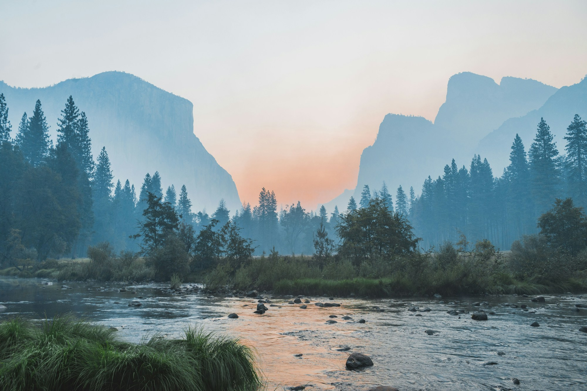
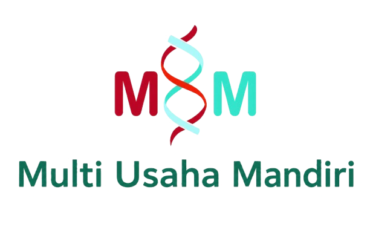
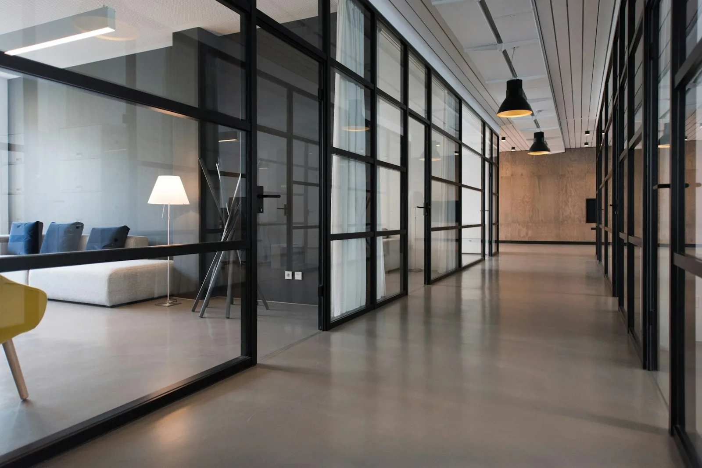

Menginap di tepi teluk
ARUVA — Teluk Timur
Suite, vila, santap musiman, dan panduan kedatangan.
32 halaman demo
Desain untuk beragam kebutuhan
Jelajahi contoh situs bisnis, layanan, komunitas, dan hiburan. Buka halaman di dalamnya untuk mencoba navigasi serta fitur demonstrasi sesuai bidang yang Anda pilih.

Menginap di tepi teluk
Suite, vila, santap musiman, dan panduan kedatangan.
32 halaman demo Buka
Buka 
Ruang untuk keseharian
Hunian, ruang kerja, material, dan tahapan perancangan.
32 halaman demoRancang perjalanan Anda
Bandingkan model, jelajahi spesifikasi, dan coba konfigurator.
32 halaman demoTemukan alamat berikutnya
Pencarian properti, kawasan, pembiayaan, dan jadwal kunjungan.
33 halaman demo
Mendukung operasional usaha
Pengadaan, kontraktor, portofolio, dan kebutuhan proyek.
36 halaman demo
Sistem digital yang terhubung
Pengembangan aplikasi, infrastruktur, keamanan, dan dukungan.
36 halaman demo
Merencanakan langkah usaha
Strategi, riset, operasi, dan pendampingan organisasi.
32 halaman demo
Kejelasan untuk setiap keputusan
Bidang praktik, tim, wawasan, dan proses konsultasi.
39 halaman demoPerjalanan pasien yang jelas
Layanan spesialis, dokter, persiapan kunjungan, dan janji demo.
37 halaman demoLayanan warga dalam satu portal
Administrasi, perizinan, pengaduan, dan panduan dokumen.
32 halaman demoKeuangan dalam pandangan utuh
Produk, perbandingan, wawasan, dan simulasi perencanaan.
32 halaman demoPerjalanan barang yang terukur
Rute pengiriman, dokumen, pelacakan contoh, dan panduan kargo.
32 halaman demoInformasi energi sehari-hari
Pemakaian, tagihan, meter, dan bantuan layanan.
32 halaman demoBelajar melalui karya
Program, pengajar, penerimaan, dan kehidupan belajar.
32 halaman demoMembaca persoalan lebih dekat
Berita contoh, analisis, topik, dan standar editorial.
32 halaman demoDari program menuju bukti
Program lapangan, laporan, relawan, dan transparansi.
32 halaman demoRiset yang dapat ditelusuri
Program ilmiah, publikasi, kemitraan, dan tata kelola riset.
32 halaman demoPekerjaan yang sesuai arah Anda
Lowongan contoh, profil perusahaan, persiapan, dan lamaran demo.
32 halaman demoSusun agenda pertunjukan
Artis, panggung, jadwal, tiket demo, dan panduan pengunjung.
32 halaman demoDekat dengan klub
Pertandingan, pemain, tiket demo, dan komunitas pendukung.
32 halaman demoRencanakan keberangkatan
Pencarian penerbangan, bagasi, layanan, dan perjalanan demo.
32 halaman demoMasuki dunia Nacre
Karakter, peta dunia, mekanik permainan, dan catatan pengembang.
32 halaman demoTemukan cerita pilihan
Film, koleksi, jadwal tayang, dan daftar tontonan demo.
32 halaman demo
Ruang dan keseharian
Ruang, material, cahaya, dan panduan merancang hunian yang tenang.
32 halaman demoStudio digital eksperimental
Sistem identitas, tipografi, interaksi, dan proses menyusun brief digital.
32 halaman demo
Arsitektur dan ruang publik
Kajian hunian, ruang bersama, material, dan proses perancangan.
32 halaman demo
Konsep produk audio
Eksplorasi material, kebiasaan mendengar, panduan penggunaan, dan tas demo.
32 halaman demo
Jurnal kerajinan
Bahan, kerja tangan, proses tenun, dan catatan membaca yang dapat disimpan.
32 halaman demo
Konsep rekayasa presisi
Catatan komponen, dokumentasi teknis, inspeksi, dan perawatan sebagai simulasi.
32 halaman demoLaboratorium kreatif
Latihan visual, batasan kreatif, lembar kerja, dan cara meninjau sebuah gagasan.
32 halaman demo
Konsep sinema
Catatan treatment, komposisi bingkai, nada gambar, dan proses praproduksi.
32 halaman demoAtlas lingkungan konseptual
Peta ilustratif, lapisan pengamatan, dan panduan menyusun catatan lapangan.
32 halaman demo
Material dan bengkel desain
Sifat material, sambungan, perawatan, dan penyusunan brief benda sehari-hari.
32 halaman demo
Informasi komunitas
Direktori layanan dan ruang bersama dengan bahasa petunjuk yang tegas.
32 halaman Buka ↗
Buka ↗ Buka ↗
Buka ↗
Administrasi keuangan
Dokumentasi internal dengan struktur ledger dan jejak perubahan.
32 halaman
Botanical experience
Rute observasi, zona kebun, dan fase kuratorial fiktif.
32 halaman